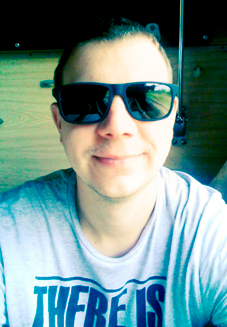

Contact information:
- City: Baranovichi, Belarus
- Email adress: turbin28@gmail.com
- Phone number: +375-33-356-02-67
- Telegram: https://t.me/tav25
Summary:
Engaged in amateur-level development for personal and freelance needs. Easy to learn. Sometimes, know how to solve a problem, but you don't know the tools, that's why I'm constantly learning.
Skills:
Web technology:
- HTML5
- CSS3
Scripting languages:
- Python
- JS
IDE:
- VS Code
- SublimeText
Version Control:
- GIT
Others:
- Spark Ar Studio
- Adobe Photoshop
- Adobe Illustrator
- Adobe Premier pro
- Adobe After Effects
Experience:
Previously I developed sites on Joomla, now I'm a freelancer, creating masks and games for Instagram (Spark ar Studio). To automate personal work I use Python (Jupyter notebook).
Education:
Plekhanov Russian University of Economics Minsk branch (Applied Computer Science in Management) 2004-2009
English:
A1-A2